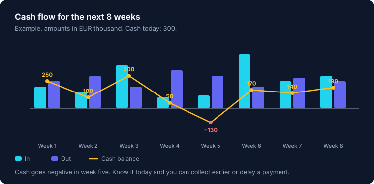
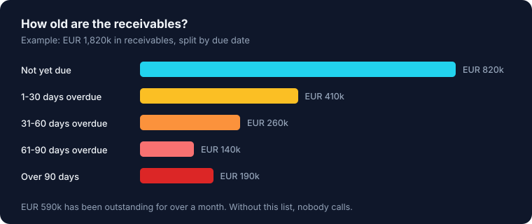

Why You Need Finance and Bookkeeping Software
Many business owners say "we have accounting" and what they mean is their external accountant. The accountant processes the invoices, files the tax returns and keeps the statutory books. But the answers to "who do we pay what this week, who owes us what, will we make it to month end" are not with the accountant. Those questions wait for an answer inside the company, usually in the owner's head and in an Excel file.

There are two kinds of accounting
The first is the official accounting kept for the tax authorities. It looks backwards, its rules are fixed and the external accountant handles it. The second is the record a company keeps in order to manage itself. This is called bookkeeping or finance tracking. It looks at today and the weeks ahead.
Everyone has some kind of order in place for the first, because it is mandatory. The second is scattered in most companies. Customer accounts are in an Excel file, cheques in a diary, bank transactions in online banking, loan instalments in yet another file. The only place that sees them all together is the owner's mind.
There is money in the bank, but what about three weeks from now?
In most companies, finance tracking means checking the bank account in the morning. If there is money in the balance, things are considered fine. The balance shows today. It does not show the cheque falling due next week, the mid-month payroll, the VAT payment or the customer whose payment is late.

This is why profitable companies run short of cash too. The sale is made, the invoice issued, the money earned on paper. But if the customer pays in sixty days and the supplier has to be paid in thirty, the gap has to be covered from somewhere. A company that sees this five weeks ahead has a calm conversation with the bank. One that notices on the last day takes the most expensive loan it can find.
Receivables that are not collected
The situation we see most often in the companies we talk to is that they know who owes how much, but not for how long. The customer list shows twenty customers with amounts next to them. Which ones are overdue, which one has not paid for three months, you cannot tell from the list.

When nobody chases an overdue receivable, the customer is in no hurry either. They pay whoever asks first. A simple list showing the age of receivables, plus regular weekly calls, shortens collection time noticeably.
A similar loss happens in invoicing. The job has been delivered, but to issue the invoice someone has to gather the delivery notes, and that gets left to the end of the month. Because the invoice goes out late, the payment term starts late and the money arrives late.
What does finance software bring together?
It collects the pieces above in a single record. When a sales invoice is issued, it is posted automatically to the customer's account and to the due-date calendar. When a purchase invoice is entered, it is added to the payment list. Cheques, promissory notes, loan instalments and salaries sit in the same calendar.
Once these records are together, the cash forecast for the coming weeks produces itself. You do not have to ask anyone "what are we paying this month?"
Invoicing is tied to sales. A delivered order turns into an invoice with one click and goes out as an e-invoice. Jobs that are finished but not yet invoiced appear on screen as a separate list.
Bank transactions are imported into the system and matched against the records. You can see which payment belongs to which invoice, and what the unmatched transactions are.
Expenses are categorised too. Which department, which project, which vehicle spends how much comes out in a few clicks at month end. From here the subject connects to measuring project profitability.
How is the work split with the external accountant?
Records kept properly inside the company make the accountant's job easier too. Instead of sending a bag of invoices at month end, you hand over categorised, reconciled records. And you can compare the statements that come back with your own records.
In most companies there is no need to change the program the accountant uses. The in-house system exports the data in a format that suits it. Some companies want to bring statutory accounting fully in-house, but that is a separate decision and does not have to be the first step.
When does it become necessary?
- When you issue and receive more than a hundred invoices a month.
- When you sell and buy on credit terms.
- When the calendar of cheques, promissory notes or loan instalments lives in one person's diary.
- When finding out who has owed you for how many days takes half an hour.
- When you cannot put a number on next month's cash position.
Where do you start?
The two areas that pay off fastest are customer and supplier accounts and due-date tracking. Put customer and supplier balances, open invoices and their due dates into the system. Even that much lets you see your receivables list and the payments due in the coming weeks.
The second step is tying invoicing to sales; the third is bank reconciliation. Expense categorisation and budgeting can come last.
On the tools side there are programs that do bookkeeping only, ERP systems that work together with sales and inventory, and solutions that sit in between. If sales, inventory and purchasing are kept in another system, finance has to talk to them. Otherwise every invoice is entered twice. When we choose a tool, that connection is the first thing we look at.
Frequently asked questions
We already have an external accountant. Do we need this as well?
They are two different jobs. Your accountant keeps the statutory record of past periods. Finance tracking shows today's receivables, payables and cash position, and the company needs it for its day-to-day decisions.
We use a bookkeeping program. Isn't that enough?
It may be enough for tracking customer and supplier accounts and invoices. Where it usually falls short is the link to sales, inventory and projects. If you are entering the same information into two systems, or still preparing your cash table in Excel, it is time to look at the next step up.
Do we have to migrate past records?
Not all of them. Open invoices, current customer and supplier balances, and cheques and promissory notes not yet due are enough. Old, closed records can stay where they are.
Related services: ERP solutions for small and mid-sized businesses, digital transformation consulting.
How much is tracking in files costing you a year?
Calculate the annual cost of re-entering data, reports prepared by hand and spreadsheet errors.
Open the calculatorLet's build your cash flow forecast together
Let's look at the money coming in and going out over the next eight weeks together.
Let's Talk About Your Project